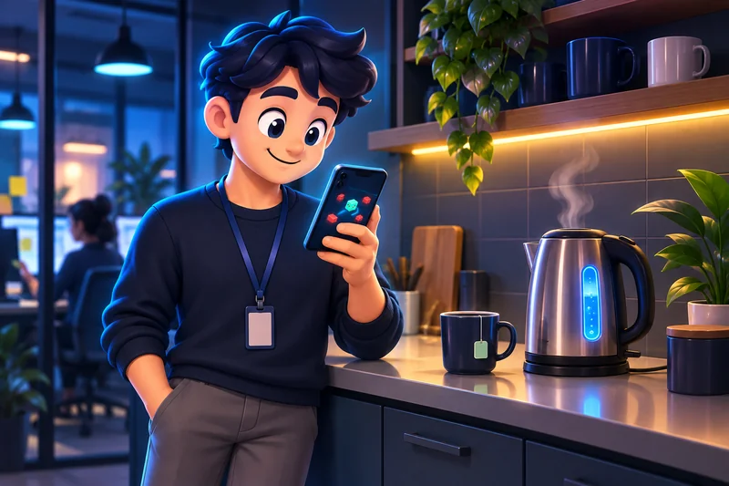
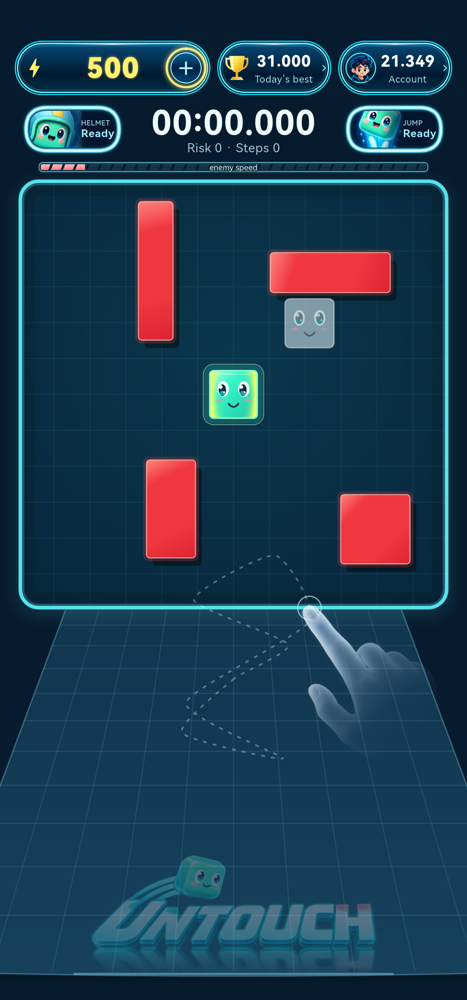
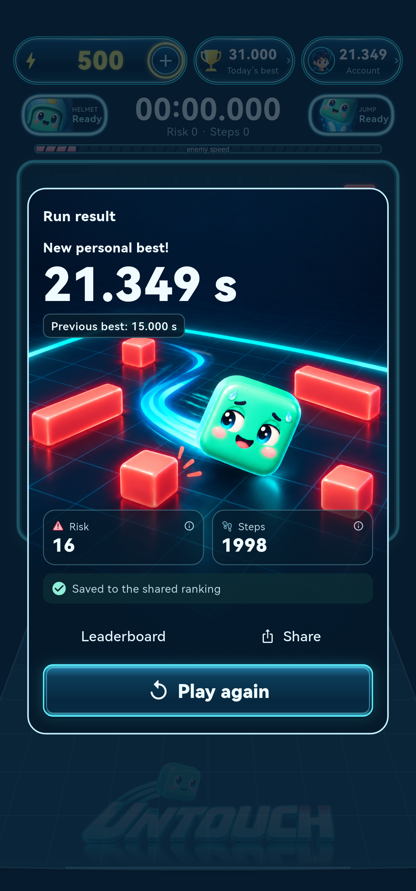

Straight into the game
Get Untouch on Google Play or open it in Telegram. One cube, moving shapes, one clear goal: don’t let them touch you.
Dodge. Survive longer.
Three tries. Right here.
Drag on the arena with your finger or mouse.
On a computer, you can also use the arrow keys.
Simple rules.
The rest is up to your reflexes.
Get Untouch on Google Play or open it in Telegram. One cube, moving shapes, one clear goal: don’t let them touch you.
Spot a gap and dodge in time. Last a little longer than you did on your previous try.
Share your score with a friend, compare your runs, and try to beat each other. The leaderboard adds to the challenge.
Whenever you have a spare minute.
On your own, or with friends.
You’ve found a seat and have a couple of stops to go. There’s time for a quick round.
Take turns, compare scores, and see who lasts longest. The next round is your chance for a rematch.
Keep an eye on the moving shapes, find an opening, and change direction before it’s too late.

Waiting for the kettle, your coffee, or a meeting to start? Fill that spare minute with a quick game.
You’re the mint-green cube. The coral shapes are your challenge. Your timer and abilities stay right beside the arena.
Screenshots from the Android app, with sample scores and balances. The Telegram interface may look different.


Get the Android app on Google Play — it’s publicly available, with no test invitation needed. You can also play in Telegram without installing a separate app. The iPhone version is still in development. Try three demo runs right here on the website.
Hold your phone upright. In the full game, drag your finger anywhere on the screen to move the cube. In this demo, drag on the arena, or use the arrow keys on a computer. The edges keep you inside; touching a moving shape ends your run.
Yes. Compare your best runs and check the leaderboard. Everyone plays their own run, and every new record is a reason to challenge a friend again.
They show the Android app with sample scores, balances, and results. The screenshots match the selected website language. The Telegram interface may look different.
Now available on Google Play.
Get it for Android and set your first personal best.